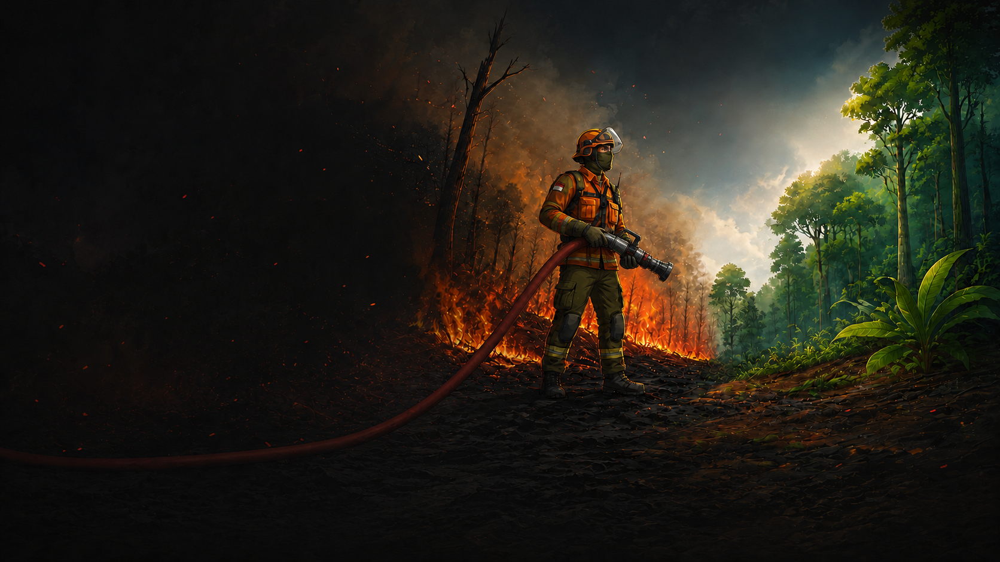

0
Item Peralatan Good
Fire truck, hose, nozzle, pump
KARHUTLA COMMAND CENTER
Pemantauan kebakaran hutan dan lahan terintegrasi untuk mempercepat deteksi, respons lapangan, dan eskalasi di seluruh wilayah operasi.
Item Peralatan Good
Fire truck, hose, nozzle, pumpPersonel ER / Hari
Komposisi standby aktif harianFire Volunteer / Hari
Target standby mitra kerjaUnit Pendukung
Fire truck, rescue & LV supportImplementasi Patroli
178/178 status AmanTitik Karhutla Aman dan Terkendali
237 item good condition